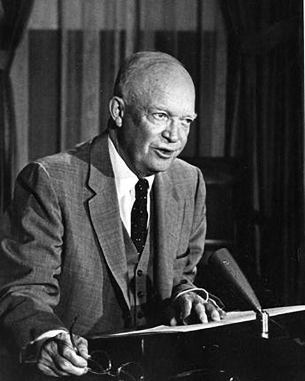
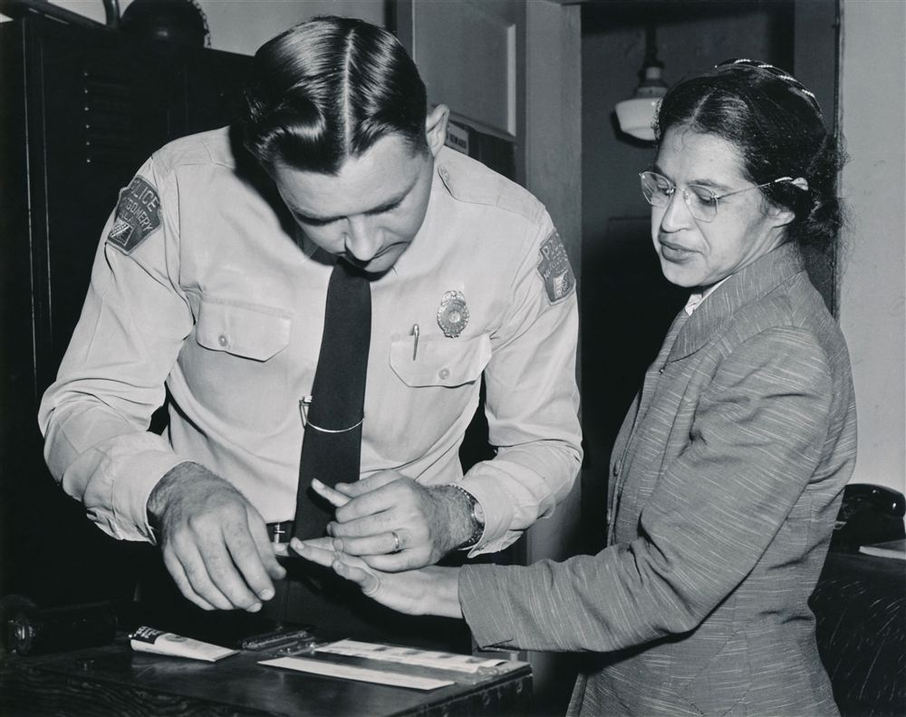
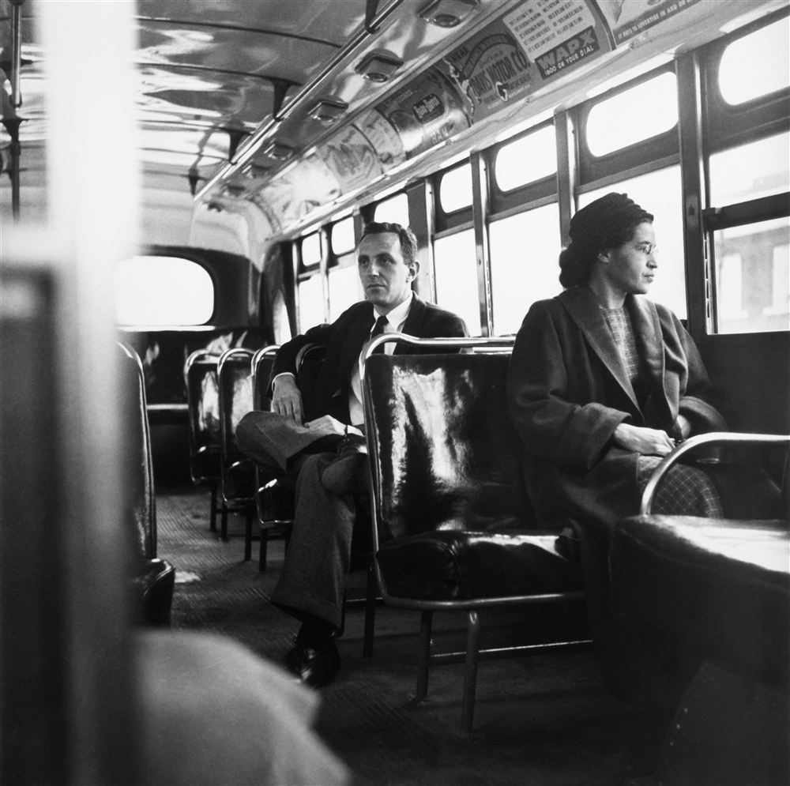
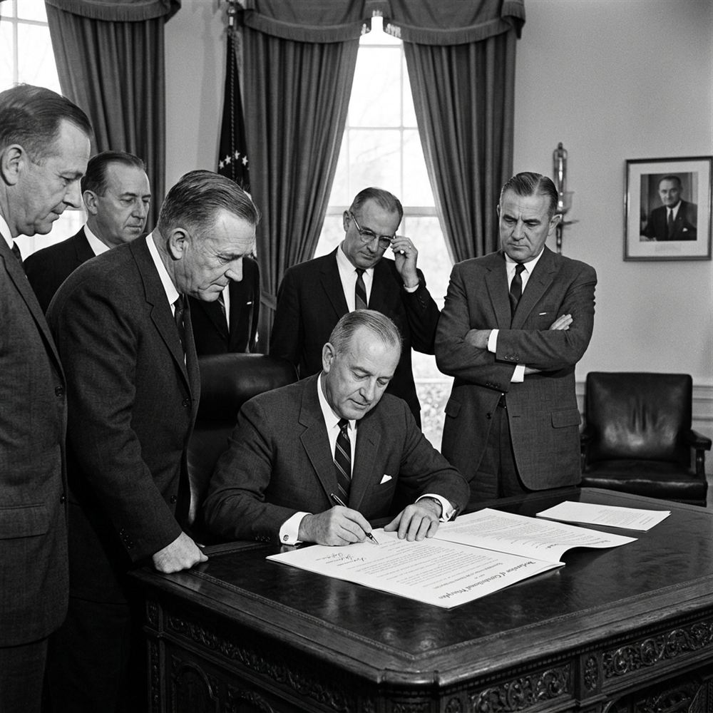
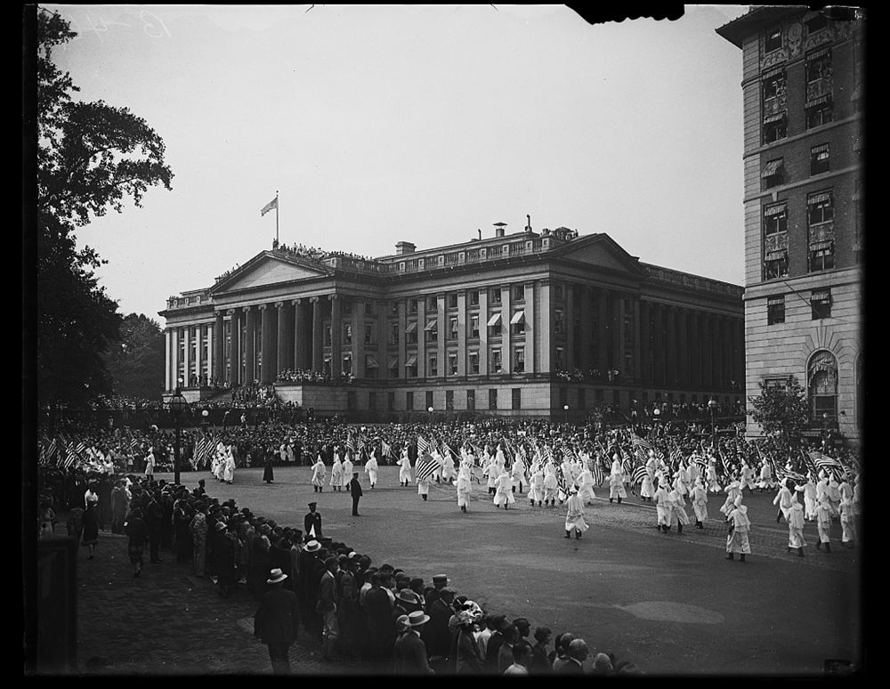

A Jim Crow sign designating a segregated 'Colored Waiting Room' in a bus terminal in the Southern United States.
In the early 1950s, Black Americans in the Southern states faced a rigid, legally enforced system of white supremacy:
- Jim Crow Laws: Southern states enforced de jure segregation in all public facilities (schools, transit, parks). Under the 1896 Plessy v. Ferguson ruling, segregation was legal if facilities were 'separate but equal' (though Black facilities were always vastly inferior).
- Voter Disenfranchisement: Southern registrars prevented Black citizens from voting using poll taxes, arbitrary literacy tests (e.g. asking Black applicants to explain complex constitutional clauses or answer impossible questions like "How many bubbles are in a bar of soap?"), and threats of violence. In Mississippi, only about 5% of eligible Black adults were registered to vote.
- Daily Discrimination: Segregated bus layouts forced Black passengers to pay at the front, exit, and re-enter via the back door. Black workers faced the 'last hired, first fired' policy, keeping them in low-wage menial labor.
>
📝 Context Focus: Jim Crow Seating Be prepared to explain how legal segregation was physically enforced in daily transit—such as Black passengers standing so white riders could sit—which created a climate of constant humiliation.
>
🎓 Scholarly Perspective: De Jure vs. De Facto: While de jure (legal) segregation defined the South, historians note that Black Americans in the North faced de facto segregation. Although Northern Black citizens had the right to vote, they were restricted to overcrowded ghettos by informal housing discrimination (redlining) and faced severe employment bias, showing that discrimination was a national, rather than solely Southern, issue.
> 🎙️
Eyewitness Testimony — John Lewis: “I remember going into town and seeing the clean, beautiful water fountain for white people, and the dirty, rusted fountain for us. I remember the signs: WHITE and COLORED. It was a physical and psychological barrier that told us every day that we were less than human. When I asked my parents why, they said, 'That's the way it is. Don't get in the way.'”
Context: Civil rights activist and later Congressman, writing in his memoir Walking with the Wind: A Memoir of the Movement (1998) about growing up in rural Troy, Alabama.💬
Reflective Question: How does John Lewis's childhood experience illustrate the difference between the physical enforcement of segregation and its psychological impact on young Black Americans?
Knowledge Check (Q1)
What 1896 Supreme Court ruling established the constitutional doctrine of 'separate but equal'?
- A. Plessy v. Ferguson
- B. Brown v. Board of Education
- C. Sweatt v. Painter
- D. Smith v. Allwright
Think-Pair-Share: Q2 Why did the NAACP focus on legal litigation in federal courts rather than mass direct action in the early 1950s?
| 1. My Thoughts (Think) |
2. Partner's Thoughts (Pair) |
|
|
The NAACP Legal Defense Fund, led by Thurgood Marshall, challenged segregation laws in the federal courts.
Civil rights organisations utilized contrasting strategies to attack white supremacy:
- NAACP (Legal Litigation): Founded in 1909, the NAACP focused on challenging segregation in federal courts. Led by Thurgood Marshall, they targeted legal precedents, winning landmark cases like Smith v. Allwright (1944), which declared white primaries unconstitutional, and Sweatt v. Painter (1950), desegregating law schools.
- CORE (Direct Action): Founded in Chicago in 1942, the Congress of Racial Equality was committed to non-violent direct action. Influenced by Gandhi's teachings, CORE activists used sit-ins, boycotts, and early interstate bus rides (the 1947 Journey of Reconciliation) to expose segregation.
- Competing Philosophies: NAACP believed that legal change must precede social change, while CORE argued that grassroots direct action was needed to force authorities to enforce federal rulings.
🗺️ Mind Map Task
Draw a mind map in your study notes connecting the main themes and events from the specification bullet points. Make sure to use these key terms:
Jim Crow
disenfranchisement
NAACP
CORE
litigation
de jure
grassroots
non-violent direct action
segregation
>
📝 Examiner Tip: Contrasting Strategies GCSE questions often ask you to compare the methods of the NAACP and CORE. Remember to distinguish between top-down legal litigation (NAACP) and bottom-up non-violent direct action (CORE).
>
🎓 Scholarly Perspective: Legalism vs. Direct Action: Historians debate whether top-down litigation or bottom-up direct action was the true engine of progress. Legal historians argue that the NAACP's court battles established the constitutional basis for civil rights, while grassroots scholars emphasize that without CORE's direct action exposing white resistance, court decisions would have remained unenforced symbols.
Knowledge Check (Q3)
Which organisation pioneered non-violent direct action tactics like sit-ins and the 1947 Journey of Reconciliation?
- A. CORE (Congress of Racial Equality)
- B. NAACP
- C. White Citizens' Council
- D. Dixiecrats
Pair & Share Activity
Q4. How does John Lewis's childhood experience illustrate the difference between the physical enforcement of segregation and its psychological impact on young Black Americans?
Active Tasks
Q5. Give two things you can infer from Source A about voting rights in the Southern states. (4 marks)
Q6. Why did the NAACP focus on legal litigation in federal courts rather than mass direct action in the early 1950s?
Q7. How did voting disenfranchisement (like literacy tests and poll taxes) prevent Black Americans from challenging segregation locally?
Historian's Corner: ⚖️ Dual Interpretation: Challenging Segregation
Q8. Which historical interpretation provides a more convincing explanation of developments in KT 1.1: What was the position of Black Americans in the early 1950s??
Source A
Source A: From an NAACP legal report written by Thurgood Marshall in 1953, detailing court actions against segregated public facilities.
"We are taking our cases directly to the federal courts, challenging the legal base of Jim Crow. Southern registrars and school boards claim state sovereignty shields them, but the Constitution guarantees equal protection. Through litigation, we are showing that separate facilities are never equal."
Source B
Source B: A photograph of a segregation sign over a terminal entrance, taken in the Southern United States in the early 1950s.
[A photograph of a wooden sign reading 'COLORED WAITING ROOM' hanging above an entranceway of a public bus terminal.]
Provenance Scaffolding:Scaffolding Clue: Evaluate the author, audience, and motive for both sources. For written accounts, consider if the author has political reasons to justify their actions. For photographs, consider what may be excluded outside the camera's frame.
Q9. How useful are Sources A and B for an enquiry into the position of Black Americans in the Southern states in the early 1950s? (8 marks)
L2: KT 1.2: How did developments in education challenge segregation (1954–57)?[[SRC_MARKER:L1_Start]]
Learning Objectives
Demonstrate comprehensive historical knowledge of the key developments and figures in KT 1.2: How did developments in education challenge segregation (1954–57)?.
Analyse conflicting motivations, tactics, and responses of groups and individuals involved in the crisis.
Evaluate competing historical interpretations and source evidence to construct reasoned causal judgments for Paper 3.
Recall & Retrieval
1. What was the main purpose of the Jim Crow laws in the Southern states?
2. How did Thurgood Marshall challenge segregation in education?
3. What was CORE's main method of protesting against segregation?
4. Which laws enforced racial segregation and discrimination in the Southern states in the 1950s?
5. What does the abbreviation NAACP stand for?
Vocabulary Check
The Golden Sentence: Choose TWO terms from the word bank. Write ONE grammatically sophisticated, historically accurate sentence connecting them using a causal conjunction (because, although, or consequently):
1954 | Earl Warren | Orval Faubus | 101st Airborne Division | The Lost Year
Teacher Model / Pupil Sentence:
President Eisenhower addressing the nation on the constitutional necessity of enforcing federal court desegregation orders.
In May 1954, the US Supreme Court delivered a landmark ruling in the case of Brown v. Board of Education of Topeka. This legal battle fundamentally altered the course of civil rights:
- The Case: Young Linda Brown was forced to walk a dangerous journey across busy roads and a railway line to a segregated Black school several miles away, despite living near an all-white school. Supported by the NAACP, her father sued the Topeka school board.
- The Ruling: Led by Chief Justice Earl Warren, the Supreme Court ruled unanimously (9-0) that school segregation violated the Equal Protection Clause of the 14th Amendment. Warren wrote that separate educational facilities are 'inherently unequal'.
- Precedents & Clark Doll Experiments: NAACP lawyers, led by Thurgood Marshall, used psychological studies showing that segregation gave Black children a sense of inferiority (the Clark doll experiments), successfully overturning the 1896 Plessy v. Ferguson separate but equal doctrine.
- Southern Resistance & Brown II: Southern congressmen signed the 'Southern Manifesto' in 1956, pledging to resist integration. In 1955, the Court issued Brown II, ordering integration 'with all deliberate speed,' which Southern school boards exploited to delay compliance.
>
🎓 Scholarly Perspective: Warren's Unanimity Strategy: Chief Justice
Earl Warren spent months lobbying his fellow justices to ensure a unanimous 9-0 decision in Brown. He believed that any dissent would be weaponized by Southern segregationists to justify resistance. The final ruling was deliberately short and written in simple, non-legalistic language so it could be printed in newspapers across the country, making its moral clarity undeniable to the general public.
> 🎙️
Eyewitness Testimony — Elizabeth Eckford: “I looked for a friendly face in the crowd... I saw an elderly lady and she seemed to have a kind face, but when I looked at her again she spat on me. They surged closer, shouting, 'Lynch her! Lynch her!' I went to the bus stop and sat down on the bench. I couldn't keep from crying. I just wanted to go home.”
Context: One of the 'Little Rock Nine' students, recalling her attempt to enter Central High School in Arkansas on September 4, 1957.💬
Reflective Question: Elizabeth Eckford was just 15 years old. Why do you think school desegregation provoked such intense personal anger from ordinary white citizens?
Knowledge Check (Q1)
What key psychological evidence did Thurgood Marshall present to prove segregation harmed Black schoolchildren?
- A. The Clark doll experiments
- B. Standardized test scores
- C. Southern economic surveys
- D. Military enlistment data
Think-Pair-Share: Q2 Why did Governor Faubus choose to defy federal law at Little Rock, and what does this show about Southern state politics?
| 1. My Thoughts (Think) |
2. Partner's Thoughts (Pair) |
|
|
Soldiers of the 101st Airborne Division escort the 'Little Rock Nine' into Central High School, September 1957.
In September 1957, school desegregation was put to a major test at Central High School in Little Rock, Arkansas:
- The Little Rock Nine: Nine Black students, mentored by Arkansas NAACP leader Daisy Bates, attempted to enroll at the previously all-white school.
- State Defiance: Governor Orval Faubus defied federal courts by deploying the state's National Guard to block the students. An angry white mob gathered, and 15-year-old Elizabeth Eckford had to face the screaming crowd alone.
- Federal Troops: To uphold federal law and combat Soviet Cold War propaganda pointing out American racial violence, President Eisenhower federalized the Arkansas National Guard and deployed 1,000 soldiers of the elite 101st Airborne Division to protect and escort the students daily.
- The 'Lost Year' (1958-59): Rather than integrate, Governor Faubus closed all Little Rock public high schools the following year, leaving 4,000 students without education.
📝 Revision Task: Key Figures
To check your understanding of this lesson, write down a short summary explaining the roles of these key figures in the fight for equal education:
- Linda Brown: The Topeka student whose dangerous commute inspired the landmark desegregation lawsuit.
- Thurgood Marshall: The chief NAACP lawyer who used psychological doll experiments to overturn separate but equal.
- Orval Faubus: The segregationist Governor of Arkansas who deployed the National Guard to defy federal law.
- President Eisenhower: The US President who sent the 101st Airborne to enforce integration and defend federal supremacy.
>
🎓 Scholarly Perspective: Cold War Pressures on Eisenhower: President Eisenhower's decision to send the 101st Airborne was heavily influenced by international relations. During the Cold War, the Soviet Union used images of racial violence in Little Rock as propaganda in Asia and Africa to argue that American democracy was a sham. To maintain US moral authority globally, Eisenhower felt compelled to show that the federal government would enforce constitutional rights by military force.
Knowledge Check (Q3)
What retaliatory action did Governor Faubus take the following year (1958–59) to prevent integration?
- A. He closed all Little Rock public high schools (the 'Lost Year')
- B. He resigned his governorship in protest
- C. He passed a new state civil rights bill
- D. He ordered the arrest of the 101st Airborne commanders
Pair & Share Activity
Q4. Elizabeth Eckford was just 15 years old. Why do you think school desegregation provoked such intense personal anger from ordinary white citizens?
Active Tasks
Q5. Explain why desegregation in education faced severe resistance in the years 1954–57. (12 marks)
Q6. Why did Governor Faubus choose to defy federal law at Little Rock, and what does this show about Southern state politics?
Q7. How did the deployment of the 101st Airborne shift the balance of power between state and federal authorities?
Historian's Corner: ⚖️ Dual Interpretation: Federal Intervention at Little Rock
Q8. Which historical interpretation provides a more convincing explanation of developments in KT 1.2: How did developments in education challenge segregation (1954–57)??
Source A
Source A: From a photograph of white protestors gathered outside Central High School in September 1957.
[A photograph showing an angry white crowd of students and adults protesting. Some are holding signs reading 'Keep Central High Clean' and yelling as Black students arrive.]
Source B
Source B: From a photograph showing soldiers of the 101st Airborne Division guarding a station wagon escorting Black students at Central High School, Little Rock, September 1957.
[A photograph showing soldiers of the 101st Airborne Division in a military jeep guarding a station wagon as Black students get inside the vehicle, with another soldier walking on patrol.]
Provenance Scaffolding:Scaffolding Clue: Evaluate the author, audience, and motive for both sources. For written accounts, consider if the author has political reasons to justify their actions. For photographs, consider what may be excluded outside the camera's frame.
Q9. How useful are Sources A and B for an enquiry into the levels of opposition to integration at Little Rock Central High School in 1957? (8 marks)
L3: KT 1.3: How did the Montgomery Bus Boycott happen, and why did it succeed?[[SRC_MARKER:L2_Start]]
Learning Objectives
Demonstrate comprehensive historical knowledge of the key developments and figures in KT 1.3: How did the Montgomery Bus Boycott happen, and why did it succeed?.
Analyse conflicting motivations, tactics, and responses of groups and individuals involved in the crisis.
Evaluate competing historical interpretations and source evidence to construct reasoned causal judgments for Paper 3.
Recall & Retrieval
1. What did the Supreme Court decide in Brown v. Board of Education (1954)?
2. What did the 'Brown II' ruling order Southern schools to do?
3. Why did Governor Faubus deploy the National Guard to Central High School?
4. Which laws enforced racial segregation and discrimination in the Southern states in the 1950s?
5. What does the abbreviation NAACP stand for?
Vocabulary Check
Conceptual Classification: Categorise the terms from the word bank into the two historical boxes below:
Rosa Parks | Montgomery Improvement Association (MIA) | Martin Luther King Jr. | 381 | Browder v. Gayle
Power, Governance & Warfare
Economy, Trade & Society

Rosa Parks being fingerprinted by Montgomery police officers following her arrest for refusing to surrender her bus seat, December 1955.
On 1 December 1955, Rosa Parks, a respected seamstress and NAACP member, refused to stand to allow a white passenger to sit on a Montgomery bus:
- The Arrest & NAACP Role: Parks was not just a tired seamstress; she was a trained NAACP secretary who had attended the Highlander Folk School. Her arrest provided a deliberate and respectable test case.
- The Organization: Local Black leaders founded the Montgomery Improvement Association (MIA) to coordinate the bus boycott.
- MLK Chosen & Strict Non-Violence: A 26-year-old minister, Martin Luther King Jr., was elected president of the MIA, bringing powerful Christian non-violence rhetoric to the fore. King strictly promoted non-violent direct action, urging his followers not to retaliate even after white supremacists firebombed his own home.
>
🎓 Scholarly Perspective: The Choice of Test Case: Nine months before
Rosa Parks' arrest, a 15-year-old Black girl named Claudette Colvin was arrested in Montgomery for the same offence. However, civil rights leaders chose not to use her case to challenge segregation. Colvin was young, pregnant, and from a poorer background, which leaders feared segregationists would use to assassinate her character.
Rosa Parks, an middle-class, respected NAACP activist, was deemed the perfect 'test case' to withstand intense media scrutiny.
> 🎙️
Eyewitness Testimony — Jo Ann Robinson: “I did not go to bed that night. I went to the college and called two of my students. We stayed up all night, typing the stencils and running off 35,000 leaflets. By 6:00 a.m. we had them divided into neat piles for distribution. The leaflets said: 'Don't ride the buses on Monday.' We were tired, but we knew this was the moment we had waited for.”
Context: President of the Women's Political Council (WPC), recalling the night of Rosa Parks's arrest in December 1955.💬
Reflective Question: Rosa Parks's arrest is famous, but Jo Ann Robinson's account shows the massive organization behind the scenes. How does this source challenge the idea that the boycott was just a spontaneous event?
Knowledge Check (Q1)
Which organisation was established to coordinate the Montgomery Bus Boycott, electing Martin Luther King Jr. as president?
- A. Montgomery Improvement Association (MIA)
- B. Student Nonviolent Coordinating Committee
- C. Congress of Racial Equality
- D. Black Panther Party
Think-Pair-Share: Q2 Why did the MIA select the young, relatively new minister Martin Luther King Jr. to lead the boycott instead of established local figures?
| 1. My Thoughts (Think) |
2. Partner's Thoughts (Pair) |
|
|

Rosa Parks sitting at the front of a newly integrated Montgomery city bus following the Browder v. Gayle ruling, December 1956.
The boycott succeeded due to disciplined logistics, legal victories, and new organization:
- Carpool Network & Jo Ann Robinson: The MIA organized an extensive private carpool network. This was kickstarted by Jo Ann Robinson and the Women's Political Council (WPC), who printed and distributed 35,000 leaflets calling for the boycott within 24 hours of Parks' arrest.
- Supreme Court Ruling: In November 1956, the Supreme Court ruled in the Browder v. Gayle case that segregated bus transit was unconstitutional.
- The SCLC (1957): Following the boycott's success, Martin Luther King Jr. and other ministers set up the Southern Christian Leadership Conference (SCLC) to coordinate non-violent protests.
- Civil Rights Act (1957) & Dixiecrats: Passing with momentum from the boycott's success, this Act aimed to protect voting rights. However, intense opposition from Southern 'Dixiecrats' (including Strom Thurmond's record-breaking 24-hour-18-minute filibuster) heavily weakened its enforcement powers.
🗺️ Mind Map Task
Draw a mind map in your study notes connecting the main themes and events from the specification bullet points. Make sure to use these key terms:
Rosa Parks
boycott
MIA
carpools
unconstitutional
Martin Luther King Jr.
SCLC
non-violent direct action
grassroots
>
📝 Examiner Tip on Boycott Tactics Always emphasize the combination of economic pressure (boycott) and legal pressure (Supreme Court cases). One without the other would not have achieved victory.
>
🎓 Scholarly Perspective: King's Leadership role: Historians note that while MLK's oratorical skills gave the movement a powerful moral voice, the boycott's success relied heavily on local grassroots organizers like Jo Ann Robinson and the carpool system's flawless daily logistics.
Knowledge Check (Q3)
How many days did the Montgomery Bus Boycott last before buses were integrated?
- A. 381 days
- B. 100 days
- C. 50 days
- D. 2 years
Pair & Share Activity
Q4. Rosa Parks's arrest is famous, but Jo Ann Robinson's account shows the massive organization behind the scenes. How does this source challenge the idea that the boycott was just a spontaneous event?
Active Tasks
Q5. How useful are Sources B and C for an enquiry into the reasons for the success of the Montgomery Bus Boycott? (8 marks)
Q6. Why did the MIA select the young, relatively new minister Martin Luther King Jr. to lead the boycott instead of established local figures?
Q7. In what ways did the carpool system demonstrate the deep solidarity and community coordination of Montgomery's Black residents?
Historian's Corner: ⚖️ Dual Interpretation: Non-Violent Economic Action
Q8. Which historical interpretation provides a more convincing explanation of developments in KT 1.3: How did the Montgomery Bus Boycott happen, and why did it succeed??
Source A
Source A: A photograph of Martin Luther King Jr. addressing boycotters in a crowded church during the Montgomery Bus Boycott, late 1955.
[A photograph showing Martin Luther King Jr. speaking passionately from a pulpit. The church is completely packed with Black citizens sitting and standing, listening intently with expressions of unity.]
Source B
Source B: From a photograph showing Rosa Parks being fingerprinted by police in Montgomery, Alabama, February 1956.
[A photograph showing Rosa Parks standing calmly while a police officer applies ink to her fingers for fingerprinting, representing the arrest of activists during the boycott.]
Provenance Scaffolding:Scaffolding Clue: Evaluate the author, audience, and motive for both sources. For written accounts, consider if the author has political reasons to justify their actions. For photographs, consider what may be excluded outside the camera's frame.
Q9. How useful are Sources A and B for an enquiry into the methods and leadership of the Montgomery Bus Boycott? (8 marks)
L4: KT 1.4: Why did white people in the South resist integration, and how did they do it?[[SRC_MARKER:L3_Start]]
Learning Objectives
Demonstrate comprehensive historical knowledge of the key developments and figures in KT 1.4: Why did white people in the South resist integration, and how did they do it?.
Analyse conflicting motivations, tactics, and responses of groups and individuals involved in the crisis.
Evaluate competing historical interpretations and source evidence to construct reasoned causal judgments for Paper 3.
Recall & Retrieval
1. Why was Rosa Parks arrested in Montgomery in December 1955?
2. How did the Montgomery Improvement Association (MIA) support the boycotters?
3. What did the Supreme Court decide about bus segregation in Browder v. Gayle?
4. Which laws enforced racial segregation and discrimination in the Southern states in the 1950s?
5. What does the abbreviation NAACP stand for?
Vocabulary Check
Spot the Deliberate Error: Read the statement below. One historical fact or vocabulary concept has been deliberately falsified. Underline the error and explain the accurate historical reality below:
The Southern Manifesto | White Citizens' Councils | 1956 | Ku Klux Klan | Dixiecrats
Challenge: Write ONE statement containing a deliberate historical misconception using The Southern Manifesto or White Citizens' Councils. Identify and correct the error:
Teacher Model / Historical Correction:
Southern Senators and Congressmen sign the 1956 'Southern Manifesto' pledging massive resistance to federal desegregation orders.
Southern politicians used local laws and state institutions to block federal desegregation directives:
- The Southern Manifesto (1956): Signed by over 100 Southern congressmen, it urged states to resist integration. Led by Virginia Senator Harry Byrd, it initiated a campaign of 'Massive Resistance' to close integrated schools.
- Dixiecrats & Filibustering: Conservative Southern Democrats used filibusters, such as Senator Strom Thurmond's record 24-hour-18-minute filibuster against the 1957 Civil Rights Act, to delay reforms.
- State Nullification: Several Southern states passed laws declaring federal desegregation rulings 'null and void' within their borders.
>
🎓 Scholarly Perspective: The Revival of Interposition: To bypass federal integration orders, Southern politicians revived the pre-Civil War constitutional theory of 'interposition.' Champions of this theory, such as Senator James Eastland, argued that states had the right to 'interpose' themselves between federal authorities and their citizens to protect local laws from federal overreach. This intellectual framework justified the Southern Manifesto and state-level nullification efforts.
> 🎙️
Eyewitness Testimony — Mose Wright: “They came to my house at 2:00 in the morning. Bryant had a pistol in one hand and a flashlight in the other. He asked me if I had two boys from Chicago. I said yes. He told Emmett to get his clothes on. Emmett's aunt offered them money to leave him, but they told her to shut up. In court, I had to stand up, look at those white men, and point my finger at them. I said: 'There he is.' I knew the danger of pointing my finger at a white man in Mississippi, but I had to do it.”
Context: Emmett Till's great-uncle, testifying at the trial of the killers in Mississippi (September 1955).💬
Reflective Question: Why was Mose Wright's action in court—openly accusing and pointing at white men in Mississippi—considered a revolutionary act of bravery in 1955?
Knowledge Check (Q1)
What legislative tactic did Senator Strom Thurmond use for over 24 hours to obstruct the 1957 Civil Rights Act?
- A. A Senate filibuster
- B. A judicial appeal
- C. A constitutional veto
- D. A presidential petition
Think-Pair-Share: Q2 How did 'respectable' economic retaliation by Citizens' Councils reinforce violent terror by the KKK?
| 1. My Thoughts (Think) |
2. Partner's Thoughts (Pair) |
|
|

Ku Klux Klan members in regalia; the KKK experienced a violent revival across the Deep South during the 1950s.
At the grassroots level, opposition took both economic and violent forms:
- White Citizens' Councils: Formed to apply economic pressure. Often referred to as the 'uptown KKK', their middle-class members (doctors, bank managers) fired Black activists, evicted sharecroppers, and worked with banks to deny loans, making activism a massive personal and financial risk.
- The Murder of Emmett Till (1955): In August 1955, 14-year-old Emmett Till of Chicago, visiting Mississippi, was accused of 'wolf-whistling' and making inappropriate comments to Carolyn Bryant, a white woman. Her husband Roy Bryant and J.W. Milam abducted Emmett in the middle of the night, savagely beat him, shot him, and dumped his body in a river. Despite overwhelming evidence, an all-white jury found them 'not guilty' in just one hour (67 minutes); protected by double jeopardy, they later sold their confession to a magazine. Mamie Till's decision to hold an open-casket funeral to show his mutilated body shocked the nation and galvanized the movement.
- Ku Klux Klan (KKK) and Terror: The KKK saw a major revival, believing themselves superior as WASPs (White Anglo-Saxon Protestants). They used terror tactics including bombings, beatings, and lynchings (mob murder) against Black Americans and civil rights workers, wearing white robes and hoods to conceal their identities and lighting burning crosses to terrify communities.
- Police Complicity: Local Southern police chiefs, judges, and politicians frequently colluded with or ignored KKK violence. Because of this corrupt legal system, Klan members were rarely convicted of their violent crimes.
🗺️ Mind Map Task
Draw a mind map in your study notes connecting the main themes and events from the specification bullet points. Make sure to use these key terms:
Ku Klux Klan
White Citizens' Councils
Dixiecrats
Emmett Till
lynching
white supremacy
filibuster
economic pressure
status quo
>
📝 Examiner Note: Opposition Examiners expect you to distinguish between 'respectable' white opposition (Citizens' Councils and politicians) and violent 'fringe' opposition (KKK), noting how they reinforced each other.
>
🎓 Scholarly Perspective: Emmett Till and the Media: The murder of Emmett Till was a major catalyst for the civil rights movement. Historians point out that the graphic photographs published in Jet magazine brought the reality of Southern white supremacy to Northern classrooms and living rooms, generating national moral outrage.
Knowledge Check (Q3)
What organization was formed across Southern towns by middle-class white leaders to use economic pressure against integrationists?
- A. White Citizens' Councils (WCC)
- B. The Ku Klux Klan
- C. The Dixiecrats
- D. The National Guard
Pair & Share Activity
Q4. Why was Mose Wright's action in court—openly accusing and pointing at white men in Mississippi—considered a revolutionary act of bravery in 1955?
Active Tasks
Q5. How did 'respectable' economic retaliation by Citizens' Councils reinforce violent terror by the KKK?
Q6. What was the core constitutional argument in the 'Southern Manifesto', and how did it attempt to justify segregation?
Historian's Corner: ⚖️ Dual Interpretation: Southern White Resistance
Q7. Which historical interpretation provides a more convincing explanation of developments in KT 1.4: Why did white people in the South resist integration, and how did they do it??
Q8. Explain why there was widespread Southern white opposition to desegregation in the years 1954–57. (12 marks)
You may use the following in your answer:
- The Ku Klux Klan (KKK)
- The 'Southern Manifesto' (1956)
You must also use information of your own.
Generated: 2026-09-16 23:10:25 UTC | Unit: usa